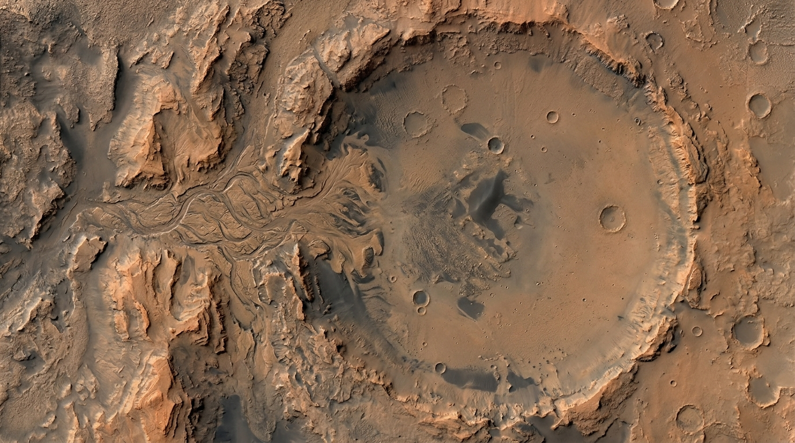

STEP 1 OF 3 · ROUTE SELECTION
Choose who is travelling
and draw a route.
Select an explorer, then click the map to add route points. Drag a point to adjust it.
MARTIAN REGION
Jezero Crater
Click anywhere on the map to draw your route. Add at least two points.

JEZERO CRATER 18.38° N · 77.58° E
0 route points
Route drawing is available. Route calculations will be added next.Continue to calculation